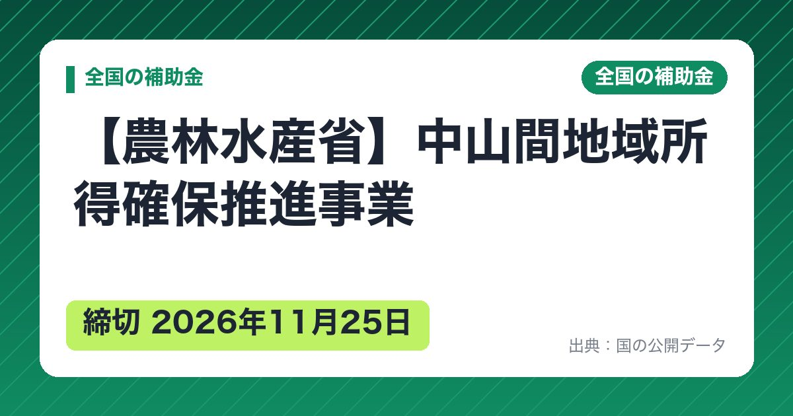

【農林水産省】中山間地域所得確保推進事業

締切 2026年11月25日｜上限 500万円
中⼭間地域において農家所得を確保するため、マーケットや消費者の動向把握、⽣産・加⼯・流通・販売の再編、国内外 の販路拡⼤に向けた販売戦略の検討等、地域の農業所得確保に向けた計画の策定と実践を⽀援します。
概要
| 対象地域 | 全国 |
|---|---|
| 補助上限額 | 500万円 |
| 補助率 | 定額助成 |
| 受付期間 | 2025年12月16日 〜 2026年11月25日 |
| 対象の従業員数 | 従業員数の制約なし |
| 利用目的 | 新たな事業を行いたい / 販路拡大・海外展開をしたい |
| 対象業種 | 農業、林業 |
| 実施機関 | 中山間地域所得確保対策 |
広告補助金の申請には決算書・帳簿が必要です。会計ソフト・開業の手続きの例：
・やよいの青色申告オンライン  （個人事業主の確定申告に）
（個人事業主の確定申告に）
・無料の確定申告自動化ソフト マネーフォワード クラウド確定申告  （確定申告をかんたんに）
（確定申告をかんたんに）
・無料の会計自動化ソフト マネーフォワード クラウド会計  （法人・個人の会計を自動化）
（法人・個人の会計を自動化）
・補助金なら、パソコンとセットでお得に導入【freee会計】  （補助金を使う導入プランあり・詳細は公式で）
（補助金を使う導入プランあり・詳細は公式で）
・開業届作成するなら【弥生のかんたん開業届】  （創業補助金の前に個人で開業する方へ）
（創業補助金の前に個人で開業する方へ）
・会社設立を無料で始めるなら【弥生のかんたん会社設立】  （法人を作る方へ）
（法人を作る方へ）
公募の内容（原文の抜粋）
■参照URL
※本事業については、本サイトにて申請受付を行っておりません。詳細については、以下のページをご確認ください。
https://www.maff.go.jp/j/nousin/tiiki/sesaku/syotoku_kakuho.html
■目的・概要
中山間地域の農業は、食料の安定供給の確保や多面的機能の発揮の面で重要な役割を担っています。また、中山間地域は、豊かな風土を活かして全国的なブランド化が図られるなど、経営者の意欲によって、今後の農業経営に大きな希望が持てる地域です。一方で、同地域は、自然的・経済的・社会的条件が不利な上に、平地と比べて高齢化や人口減少が進展しています。
このような中、「総合的なTPP等関連政策大綱」及び「国民の命と暮らしを守る安心と希望のための総合経済対策」に基づき、次世代を担う経営感覚に優れた担い手を支援するとともに、生産基盤の継承・強化、国際競争力の強化等を支援することが必要です。
これらを踏まえ、中山間地域所得確保対策により、収益性の高い農産物等の生産・販売等の取組を総合的に支援し、意欲ある中山間地域の農業者等の所得確保を推進します。
■事業実施主体
都道府県、市町村、地域協議会、農業者団体、農業者（２者以上）
■実施要件
推進事業は、実施要綱第2の3の(2)に規定する所得確保計画の区域（以下「計画区域」という。）を対象に実施するものとし、計画区域内の受益者数が農業者２者以上であり、かつ可能な限り計画区域内の認定農業者を含めるよう努めるものとする。なお、計画区域の存する市町村は、構成員とならない計画区域内の認定農業者に対しては推進事業で得られる知見・結果等が裨益されるよう情報の共有・周知を図ること。
実施主体が農業者団体等であるときは、計画区域の存する市町村の指導及び助言を踏まえた上で事業実施計画を作成することとする。
■事業の内容
対策の対象事業は、次に掲げる事業とします。
（１）中山間地域所得確保推進事業
ア 国内市場、海外市場に関するマーケット調査
イ 消費者に対する消費動向調査
ウ 農産物生産・加工、流通、販売に関する現状の調査、分析
エ 高収益作物導入などの生産から販売までの戦略検討
オ 所得確保計画の策定又は見直し
カ 所得確保計画の実践（計画初年度又は計画見直し年度の取組）
（アからエまでは選択項目、オ及びカは必須項目）
（２）関連事業
ア ⽔⽥の汎⽤化・畑地化、畑地・樹園地の⾼機能化等の推進
イ 畜産・酪農収益⼒強化整備等特別対策事業（畜産クラスター事業）
ウ ⿃獣被害防⽌総合対策
エ 産地⽣産基盤パワーアップ事業
■申請方法
下記の問合せ先までご連絡下さい。
■問合せ先
農林水産省農村振興局地域振興課
担当者：中山間対策班
電話番号：03-3502-8111（内線5638）
ダイヤルイン：03-3501-8359
広告
全国のほかの補助金
- 「グリーンイノベーション基金事業／次世代型地熱技術の開発」の公募（締切 2026年11月20日）
- 令和７年度（補正予算）地域脱炭素実現に向けた具体的施策実装支援事業（四次公募）（締切 2026年11月20日）
- 令和８年度地域脱炭素実現に向けた具体的施策実装支援事業（締切 2026年11月20日）
- 【三次公募】令和８年度 天然ガス利用設備による強靱性向上対策事業費補助金（締切 2026年11月20日）
- エイジフレンドリー補助金（締切 2026年11月20日）
- 「太陽光発電導入拡大等技術開発事業」の第3回公募（締切 2026年11月25日）
- 「ポスト5G情報通信システム基盤強化研究開発事業（社会課題解決に向けた量子コンピュータ次世代機開発・実証の加速）」（g12-2：部素材）の追加公募（締切 2026年11月26日）
- 【事前着手】令和8年度排出削減が困難な産業におけるエネルギー・製造プロセス転換支援事業（二次公募）（事業Ⅱ/紙パルプ・化学・セメント）（締切 2026年11月27日）